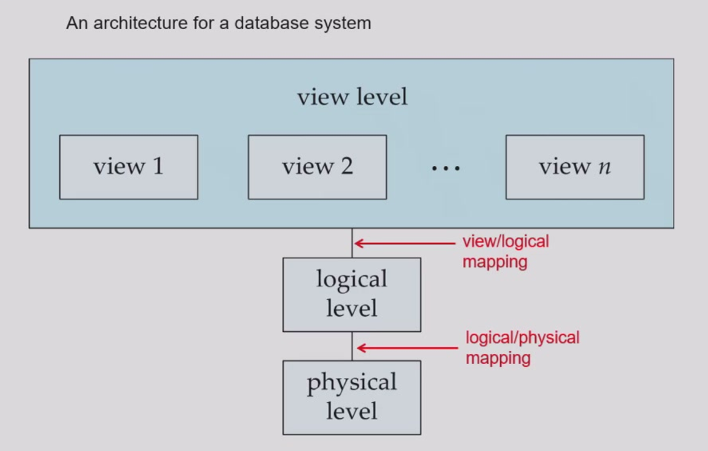
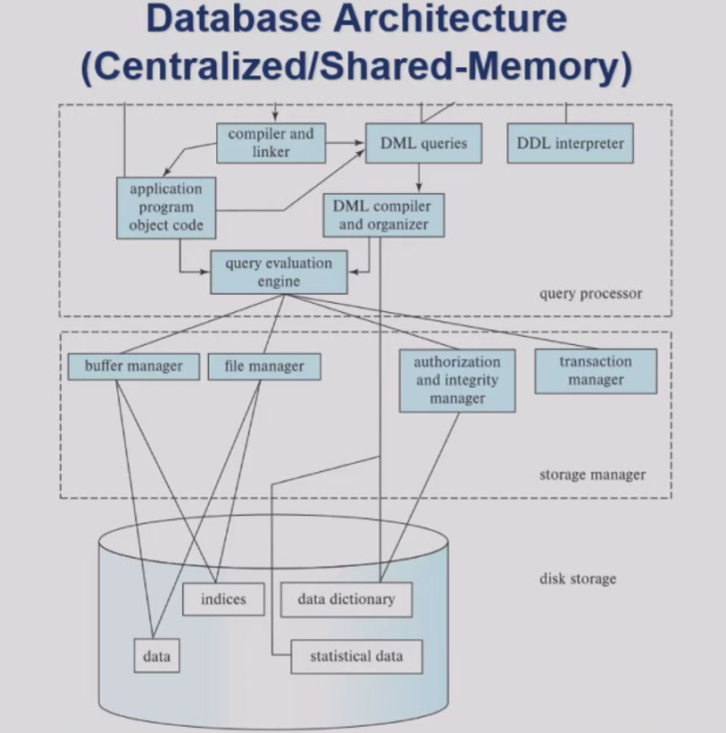

Lecture 1: Introduction
数据库管理系统（DBMS）核心概念
数据库管理系统是用于管理相互关联数据集合的复杂软件系统，其核心功能包括：
- 数据持久性：长期存储数据
- 高效访问：提供多用户并发访问支持
- 完整性控制：通过约束保证数据逻辑正确性
- 故障恢复：确保系统异常时的数据一致性
- 安全控制：实现权限管理与审计功能
典型应用场景覆盖金融交易、航空订票、医疗记录等社会各领域，例如：
- 银行账户管理系统的并发交易
- 电商平台的商品推荐算法
数据抽象三层体系
| 抽象层级 | 描述内容 | 示例 |
|---|---|---|
| 物理层 | 数据存储细节 | 磁盘块分配策略 |
| 逻辑层 | 数据结构关系 | instructor表模式定义：(ID char(5), name varchar(20), dept_name varchar(20), salary numeric(8,2)) |
| 视图层 | 用户定制视角 | 隐藏敏感字段（如工资）的安全视图 |

物理数据独立性允许修改存储结构而不影响上层应用逻辑。
关系模型基础
关系模型采用二维表结构组织数据：
- 属性（列）：描述实体特征（如
学号、姓名） - 元组（行）：记录具体实例（如
(31801001, 张三)）
规范化理论确保数据无冗余，函数依赖关系可表示为： $$ X \rightarrow Y \quad \text{（表示属性集X唯一确定Y）} $$
数据库语言体系
数据定义语言（DDL）
DDL用于定义数据库的模式（Schema），即数据的结构和约束。核心功能包括：
- 创建/修改表结构
- 定义完整性约束（如主键、外键）
- 管理权限（授权与撤销权限）
CREATE TABLE department (
dept_name VARCHAR(20) PRIMARY KEY,
building VARCHAR(15),
budget NUMERIC(12,2)
);
数据操作语言（DML）
DML负责数据的查询与更新，分为两类：
- 过程式DML：需指定操作步骤（如关系代数）
- 声明式DML：仅描述目标结果（如SQL）
数据库引擎核心组件
存储管理器：
- 文件管理：与操作系统交互，管理磁盘存储
- 缓存管理：通过缓冲区减少I/O操作
- 索引管理：维护B+树等加速查询
查询处理器：
- 解析与翻译：将SQL转为关系代数表达式
- 逻辑优化：重写查询（如谓词下推）
- 物理优化：选择成本最低的执行计划（如索引扫描 vs 全表扫描）
事务管理器：
通过ACID特性保障可靠性：
- 原子性（Atomicity）：事务要么全执行，要么全回滚
- 一致性（Consistency）：满足所有约束（如余额≥0）
- 隔离性（Isolation）：并发事务互不干扰（通过锁机制）
- 持久性（Durability）：提交后数据永久保存
